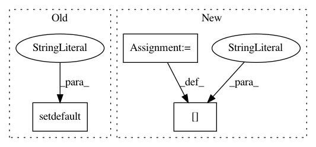

698983cb5a2a7f5492a96dd61818bf8d0f31c231,nilmtk/disaggregate/combinatorial_optimisation.py,CombinatorialOptimisation,disaggregate,#CombinatorialOptimisation#,86
Before Change
resample_seconds = load_kwargs.pop("resample_seconds", 60)
load_kwargs["sections"] = load_kwargs.pop(
"sections", mains.good_sections())
load_kwargs.setdefault("resample", True)
load_kwargs.setdefault("sample_period", resample_seconds)
timeframes = []
building_path = "/building{}".format(mains.building())
mains_data_location = "{}/elec/meter1".format(building_path)
After Change
if "resample_seconds" in load_kwargs:
warn(""resample_seconds" is deprecated."
" Please use "sample_period" instead.")
load_kwargs["sample_period"] = load_kwargs.pop("resample_seconds")
load_kwargs.setdefault("sample_period", 60)
resample_seconds = load_kwargs["sample_period"]
load_kwargs["sections"] = load_kwargs.pop(
In pattern: SUPERPATTERN
Frequency: 3
Non-data size: 3
Instances
Project Name: nilmtk/nilmtk
Commit Name: 698983cb5a2a7f5492a96dd61818bf8d0f31c231
Time: 2015-09-18
Author: jack-list@xlk.org.uk
File Name: nilmtk/disaggregate/combinatorial_optimisation.py
Class Name: CombinatorialOptimisation
Method Name: disaggregate
Project Name: matthewwithanm/django-imagekit
Commit Name: 62d39ccf9e54ccb8923956956af20f42e79ab426
Time: 2011-11-16
Author: matthew@exanimo.com
File Name: imagekit/processors/__init__.py
Class Name: AutoConvert
Method Name: process
Project Name: samuelclay/NewsBlur
Commit Name: 689cb577b66ed53d483b5818cfac7195d0e37b7c
Time: 2020-12-10
Author: samuel@ofbrooklyn.com
File Name: utils/munin/newsblur_app_times.py
Class Name: NBMuninGraph
Method Name: stats